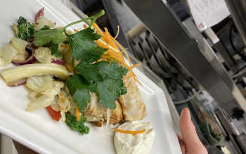

Lunchen kostar 12.90€ och i priset ingår en liten sallad samt te eller kaffe
Dagens rätt Raggmunk med stekt sidfläsk (SWE) skirat smör och rårörda lingon
Veckans fisk Pasta Casarecce med lax, räkor och kräftstjärtar, krämig dill-citronsås, toppas med rostade nötter och riven parmesan
Veckans soppa Rostad sötpotatissoppa med stekt sidfläsk (FI), apelsin- och chilicrème och brödkrutonger
Veckans sallad Sallad med tonfisk, picklad chili, vitkål, salladslök, sojabönor, sojamarinerat ägg, risnudlar, krossade jordnötter och sesammajonnäs
Veckans vegetariska Ostgratinerad cannelloni med kryddig tomatsås, pesto, serveras med tomat- och löksallad